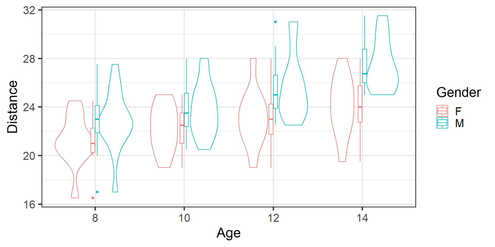
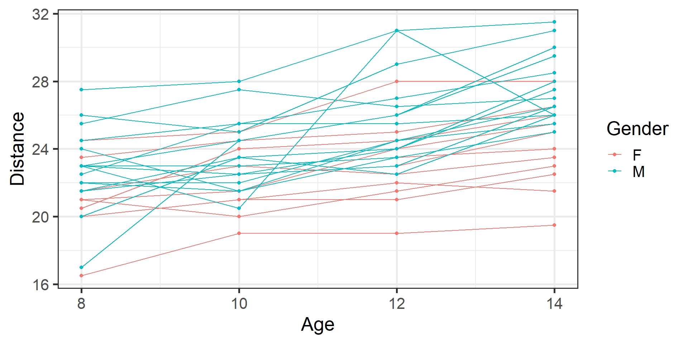
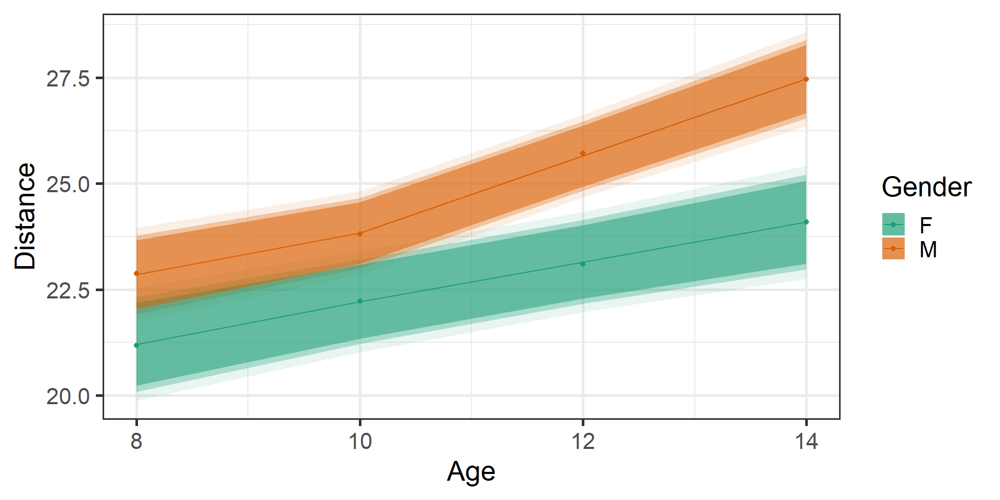
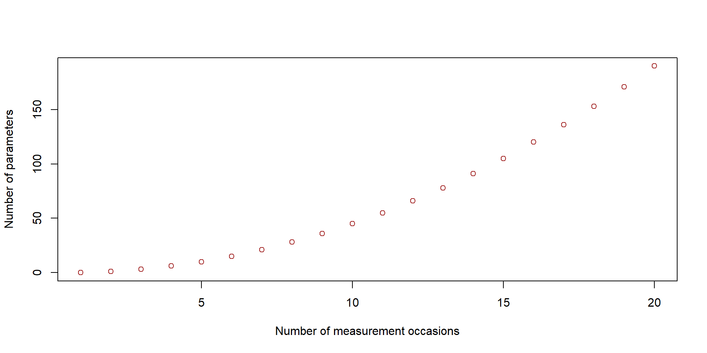

Module 1: Introduction, visualization, and general linear models
Aya mitani
Background and housekeeping
Most of workshop materials is from CHL5222 Analysis of Correlated Data taught by me for last four years
Workshop materials are available from [https://github.com/ayamitani/sorataba-workshop2024]{https://github.com/ayamitani/sorataba-workshop2024}
You can view the online slides or follow along with .qmd files
If there are errors (mostly likely there will be!), I will update materials
Contents of workshop
Workshop focuses on application rather than theory
Example data sets are unrealistically clean
Real world data are super messy
Majority of project time is spent on data cleaning
Today’s schedule
08:15-9:00 Registration & Breakfast
9:00-09:15 Opening Remarks
09:15-10:30 Module 1
10:30-10:45 Morning Break
10:45-12:00 Module 2
12:00-13:30 Lunch, Poster Presentation Assessment & Career Panel
13:30-15:00 Module 3
15:00-15:15 Afternoon Break
15:15-16:45 Module 4
16:45-17:00 Closing Remarks
Introduction
Correlated data
Many statistical tests and models assume that responses are univariate and independent
In this class, we consider settings where responses are multivariate and/or exhibit dependence
Sources of correlation
Correlation between data can arise from many sources:
Clustered data
Units of observation belong to a cluster, either by design or nature
Group-randomized trial
Individual members of a family
Patients within a hospital
Teeth within an individual
Responses within a cluster are usually positively correlated
Sources of correlation
Longitudinal data
Each individual’s responses are measured over time
Special case of clustered data
Responses are clustered within individuals and have temporal order
Goal is to characterize change in response over time and factors that influence change
Balanced study design: All individuals are measured at the same occasions
Unbalanced study design: Otherwise
Sources of correlation in longitudinal data
Between-individual heterogeneity
Natural variation in individuals’ propensity to respond
Some individuals consistently respond higher than the average, while others consistently respond below the average
Variability among individuals in their response trajectories over time
Some individuals “gains” will be above the average, while others will be below the average
Sources of correlation in longitudinal data
Within-individual biological variation
Responses from the same individual vary over time
Measurements on the same individual are more similar the closer in time they are taken, and are less similar the further apart in time
Measurement error
Variability due to the imprecision of the measurement procedure
Not unique to longitudinal (clustered) data
Measurement error is
low for height and weight
higher for LDL cholesterol, fasting glucose level
high for self-reported measures like well-being and quality-of-life
Notation
Independent data
Subject: \(i=1,...,N\)
Response variable: \(Y_{i}\)
Explanatory variable: \(x_{i}\)
Correlated (dependent) data
Sample:
Subject: \(i=1,...,N\)
Observation: \(j=1,...,n_{i}\)
Total sample size: \(\sum_{i=1}^{N}n_{i}=m\)
Response variable: \(Y_{ij}\)
Explanatory variable: \(x_{ij}\)
Example 1: Study of dental growth
A study of dental growth measurements of the distance (mm) from the center of the pituitary gland to the pteryomaxillary fissure were obtained on 11 girls and 16 boys at ages 8, 10, 12, and 14. The objectives were to learn whether there is a difference between boys and girls with respect to the measurements and their rate of change over time. This classic example is used by many authors discussing longitudinal data methods.
id gender distance_age8 distance_age10 distance_age12 distance_age14
1 1 F 21.0 20.0 21.5 23.0
2 2 F 21.0 21.5 24.0 25.5
3 3 F 20.5 24.0 24.5 26.0
4 4 F 23.5 24.5 25.0 26.5
5 5 F 21.5 23.0 22.5 23.5
6 6 F 20.0 21.0 21.0 22.5
tail(dental)
id gender distance_age8 distance_age10 distance_age12 distance_age14
22 22 M 23.0 23.0 23.5 25.0
23 23 M 21.5 23.5 24.0 28.0
24 24 M 17.0 24.5 26.0 29.5
25 25 M 22.5 25.5 25.5 26.0
26 26 M 23.0 24.5 26.0 30.0
27 27 M 22.0 21.5 23.5 25.0
Subject: \(i=1,...,27\) (\(N=29\))
Observations: \(j=1,2,3,4\), \(n_{i}=4\) for all \(i\)
Total sample size: \(\sum_{i=1}^{29}n_{i} = 29 \times 4 = 116\)
This data set is in a wide format
Data format
Wide (One row per each patient \(i\))
Many prefer this format for data collection
Easier to eyeball trend
Only useful for balanced data with one type of response and time-independent covariates
Long (One row per each observation \(j\))
Most software require this format for analysis
Good for multiple response variables
Good for time-dependent covariates
Good for unbalanced data
Difficult to observe patterns
Wide to Long Data format
library(dplyr)dentallong <- dental %>%pivot_longer(cols =starts_with("distance"),names_to ="age",# this removes "distance_age" from the valuesnames_prefix ="distance_age", values_to ="distance", ) %>%# convert age to numericmutate(age =as.numeric(age)) %>%# create new variable indicating measurement occasiongroup_by(id) %>%mutate(time =row_number()) %>%ungroup()dentallong
# A tibble: 108 × 5
id gender age distance time
<int> <chr> <dbl> <dbl> <int>
1 1 F 8 21 1
2 1 F 10 20 2
3 1 F 12 21.5 3
4 1 F 14 23 4
5 2 F 8 21 1
6 2 F 10 21.5 2
7 2 F 12 24 3
8 2 F 14 25.5 4
9 3 F 8 20.5 1
10 3 F 10 24 2
# ℹ 98 more rows
Descriptive analysis
dentallong %>%group_by(gender, age) %>%summarise(n =n_distinct(id),meandist =mean(distance), sddist =sd(distance)) %>%kable(digits =2,col.names =c("Gender", "Age", "N", "Mean", "SD"),caption ="Descriptive statistics of distance (mm) from center of pituitary gland to pteryomaxillary fissure by gender and age")
Descriptive statistics of distance (mm) from center of pituitary gland to pteryomaxillary fissure by gender and age
Gender
Age
N
Mean
SD
F
8
11
21.18
2.12
F
10
11
22.23
1.90
F
12
11
23.09
2.36
F
14
11
24.09
2.44
M
8
16
22.88
2.45
M
10
16
23.81
2.14
M
12
16
25.72
2.65
M
14
16
27.47
2.09
Data visualization
Violin plots with boxplots
dentallong %>%ggplot(aes(x =as.factor(age), y = distance, color = gender)) +geom_violin() +geom_boxplot(width =0.1) +labs(y ="Distance", x ="Age", color ="Gender")

Data visualization
Spaghetti plot
dentallong %>%ggplot(aes(x = age, y = distance, color = gender)) +geom_point(size =1.5) +# draw pointsgeom_line(aes(group = id)) +# draw a line across each patientlabs(y ="Distance", x ="Age", color ="Gender")

Data visualization
Scatterplot with mean trajectory
dentallong %>%ggplot(aes(x = age, y = distance, color = gender)) +geom_point(size =1.5) +# add mean trajectory for each treatment groupstat_summary(aes(group = gender), fun = mean, geom="line") +labs(y ="Distance", x ="Age", color ="Gender")
Analysis of correlated data
Matrix representation of correlated data
Repeated outcomes
Let \(Y_{ij}\) denote the response variable for the \(i\)th cluster (individual) (\(i=1,...,N\)) at the \(j\)th unit (time) (\(j=1,...,n_{i}\)). Using vector notation, we can group the \(n_{i}\) repeated measurements of cluster \(i\) into a \(n_{i}\times 1\) response vector: \[
Y_{i}=
\left(\begin{array}{c}
Y_{i1}\\
Y_{i2}\\
\vdots \\
Y_{in_{i}}
\end{array}\right),
\quad i = 1,...,N.
\]
Matrix representation of longitudinal data
Covariates
Associated with \(Y_{ij}\), we have a \(p \times 1\) vector of covariates
\[
X_{ij} =
\left(\begin{array}{c}
X_{ij1}\\
X_{ij2}\\
\vdots \\
X_{ijp}
\end{array}\right), \quad i = 1,...,N; j=1,...,n_{i}.
\] We can group the vectors of covariates into a \(n_{i}\times p\) matrix:
\[
X_{i}=
\left(\begin{array}{c}
X_{i1}^{T}\\
X_{i2}^{T}\\
\vdots \\
X_{ip}^{T}
\end{array}\right)=
\left(\begin{array}{cccc}
X_{i11} & X_{i12} & ... & X_{i1p}\\
X_{i21} & X_{i22} & ... & X_{i2p}\\
\vdots & \vdots & \ddots & \vdots \\
X_{in_{i}1} & X_{in_{i}2} & ... & X_{in_{i}p}\\
\end{array}\right), \quad i = 1,...,N.
\]\(X_{i}\) is simply an ordered collection of the values of the \(p\) covariates for the \(i\)th cluster at all \(n_{i}\) unit.
Covariance and correlation
Two aspects of longitudinal data complicate their statistical analysis:
repeated measurements on the same cluster (individual) are usually positively correlated
variability is often heterogeneous across measurements
Standard linear regression models violate these assumptions!
The simplest possible curve for describing changes in the mean response over time is a straight line
In this model the slope for time has a direct interpretation in terms of a constant change in the mean response for a single-unit change in time
Mean and variance functions for longitudinal
With \(i=1,...,N\) individuals measured at \(j=1,...,n\) occasions and \(p\) predictors, we can formulate a general linear regression model as:
\[
\boldsymbol{Y}_{i}= \boldsymbol{X}_{i}\boldsymbol{\beta} + \boldsymbol{\epsilon}_{i}, \quad i = 1,...,N.
\] Note: From this point forward, I will stop expressing vectors and matrices using bold fonts, but please remember that generally, \(Y_{i}\) is a vector of responses for individual \(i\), \(X_{i}\) is a matrix of predictors/covariates for individual \(i\) and so on.
Mean and variance functions for longitudinal
We assume that \[ E(\epsilon_{i}) = 0\] and \(\epsilon_{i}\) has an unknown covariance structure,
\[
E(Y_{i}|X_{i}) = E({X}_{i}\beta + \epsilon_{i}) = E(X_{i}\beta) + E(\epsilon_{i}) = X_{i}\beta + 0 = X_{i}\beta
\] and \[
\text{Cov}(Y_{i}|X_{i}) = \text{Cov}({X}_{i}\beta + \epsilon_{i}) = \text{Cov}(\epsilon_{i}) = \Sigma_{i} = \Sigma_{i}(\theta)
\] where \(\theta\) is a \(q \times 1\) vector of parameters that “make up” the structure for the covariance matrix \(\Sigma_{i}\).
Therefore, the response vector \(Y_{i}\) is assumed to have a conditional distribution that is multivariate normal with mean \(X_{i}\beta\) and covariance matrix \(\Sigma_{i}(\theta)\):
A linear spline model with a knot at age 10 assuming most general covariance structure (for now)
\[
\begin{aligned}
E(\text{Distance}_{ij}) &= \beta_{1} + \beta_{2}\text{age}_{ij} + \beta_{3}(\text{age}_{ij}-10)_{+} + \beta_{4}\text{male}_{i} \\ &+ \beta_{5}\text{age}_{ij}\times\text{male}_{i} + \beta_{6}(\text{age}_{ij}-10)_{+}\times \text{male}_{i}
\end{aligned}
\] where \((x)_{+}\) is the truncated line function defined as
\[
(x)_{+} =
\begin{cases}
x \quad \text{ if } x > 0 \\
0 \quad \text{ otherwise}.
\end{cases}
\]
knot <-10# let t* = age 10dentallong <- dental %>%pivot_longer(cols =starts_with("distance"),names_to ="age",# this removes "distance_age" from the valuesnames_prefix ="distance_age", values_to ="distance", ) %>%group_by(id) %>%mutate(time =row_number(),# for this model, we want age as continuousage =as.numeric(age), # make a 1/0 binary variable groupgroup =case_when( gender =="F"~0, gender =="M"~1 ),# code to apply truncated linear functionageknot = (age - knot) *I(age >= knot)) %>%# same can be achieved by # ageknot = ifelse(age >= knot, age - knot, 0)ungroup()dentallong[1:20,]
# A tibble: 20 × 7
id gender age distance time group ageknot
<int> <chr> <dbl> <dbl> <int> <dbl> <I<dbl>>
1 1 F 8 21 1 0 0
2 1 F 10 20 2 0 0
3 1 F 12 21.5 3 0 2
4 1 F 14 23 4 0 4
5 2 F 8 21 1 0 0
6 2 F 10 21.5 2 0 0
7 2 F 12 24 3 0 2
8 2 F 14 25.5 4 0 4
9 3 F 8 20.5 1 0 0
10 3 F 10 24 2 0 0
11 3 F 12 24.5 3 0 2
12 3 F 14 26 4 0 4
13 4 F 8 23.5 1 0 0
14 4 F 10 24.5 2 0 0
15 4 F 12 25 3 0 2
16 4 F 14 26.5 4 0 4
17 5 F 8 21.5 1 0 0
18 5 F 10 23 2 0 0
19 5 F 12 22.5 3 0 2
20 5 F 14 23.5 4 0 4
Use gls() from nlme package
dentalpw <-gls(distance ~ group + age + ageknot + group * age + group * ageknot, # short hand form: distance ~ group * age + group * ageknotcorr=corSymm(form=~ time | id), weights =varIdent(form =~1| time), data = dentallong)summary(dentalpw)
Generalized least squares fit by REML
Model: distance ~ group + age + ageknot + group * age + group * ageknot
Data: dentallong
AIC BIC logLik
455.2452 497.2447 -211.6226
Correlation Structure: General
Formula: ~time | id
Parameter estimate(s):
Correlation:
1 2 3
2 0.578
3 0.660 0.583
4 0.523 0.727 0.739
Variance function:
Structure: Different standard deviations per stratum
Formula: ~1 | time
Parameter estimates:
1 2 3 4
1.0000000 0.8800358 1.0791408 0.9622584
Coefficients:
Value Std.Error t-value p-value
(Intercept) 17.188902 2.485646 6.915266 0.0000
group 1.719649 3.228949 0.532572 0.5955
age 0.502160 0.258826 1.940144 0.0551
ageknot -0.032163 0.298101 -0.107894 0.9143
group:age -0.009843 0.336225 -0.029276 0.9767
group:ageknot 0.449226 0.387244 1.160058 0.2487
Correlation:
(Intr) group age ageknt grop:g
group -0.770
age -0.973 0.749
ageknot 0.882 -0.679 -0.924
group:age 0.749 -0.973 -0.770 0.711
group:ageknot -0.679 0.882 0.711 -0.770 -0.924
Standardized residuals:
Min Q1 Med Q3 Max
-2.51980558 -0.65360368 -0.07447669 0.58689210 2.13631270
Residual standard error: 2.32045
Degrees of freedom: 108 total; 102 residual
gls() function uses Restricted maximum likelihood estimation (REML) by default
Compare observed and expected means

Compare different mean models
A simpler model
\[
\begin{aligned}
E(\text{Distance}_{ij}) = \beta_{1} + \beta_{2}\text{age}_{ij} + \beta_{3}\text{male}_{i} + \beta_{4}\text{age}_{ij}\times\text{male}_{i}
\end{aligned}
\] When comparing different mean models with the same covariance, use ML estimation.
dentpwML <-gls(distance ~ group * age + group * ageknot, corr=corSymm(form=~ time | id), weights =varIdent(form =~1| time),method ="ML", data = dentallong)dentlinML <-gls(distance ~ group * age, corr=corSymm(form =~ time | id), weights =varIdent(form =~1| time),method ="ML", data = dentallong)anova(dentpwML, dentlinML)
Model df AIC BIC logLik Test L.Ratio p-value
dentpwML 1 16 448.5572 491.4713 -208.2786
dentlinML 2 14 447.4770 485.0269 -209.7385 1 vs 2 2.919806 0.2323
Modelling the covariance
So far, our focus has been on modeling the mean response and we have been assuming the unstructured covariance matrix in our analyses of longitudinal data
This is the most general type of covariance matrix that allows any arbitrary pattern of covariance among the repeated measures
Alternatively, we can impose more structure when modeling the covariance
When an appropriate model for the covariance has been adopted, correct standard errors are obtained and valid inferences about the regression parameters can be made
Accounting for the covariance among repeated measures usually increases efficiency or the precision with which the regression parameters can be estimated
The positive correlation among the repeated measures reduces the variability of the estimate of change over time within individuals
The choice of models for the mean response and the covariance are interdependent
The covariance between any pair of residuals, say \(Y_{ij} - \mu_{ij}(\beta)\) and \(Y_{ik} - \mu_{ik}(\beta)\), depends on the model for the mean (i.e. depends on \(\beta\))
Although the covariance among the repeated responses, is not usually of intrinsic interest, it cannot simply be ignored
Unstructured covariance
The unstructured covariance matrix assumes no explicit structure among the repeated responses, other than the homogeneity of covariance across different individuals
\(\Sigma_{i}(\theta) = \Sigma(\theta) \text{ for all } i\)
Appropriate when the number of measurement occasions is relatively small and all individuals are measured at the same set of occasions (data is balanced)
The number of variance parameters grows rapidly with the number of measurement occasions

When number of covariance parameters (length of \(\theta\)) is large, relative to sample size (\(N\)), estimation is likely to be very unstable
Problematic when there are mistimed measurements
Covariance pattern models
When sample size is not sufficiently large to estimate an unstructured covariance, we want to impose some structure on the covariance matrix
A subtle balance needs to be struck when attempting to impose some structure on the covariance matrix
With too little structure, there may be too many parameters to be estimated with limited amount of data
With too much structure, there is a potential risk of model misspecification
Both could result in misleading inferences concerning \(\beta\)
Classic tradeoff between bias and variance
Covariance pattern models have their basis in models for serial correlation originally developed for time series data
Compound symmetry (Exchangeable)
The compound symmetry structure assumes that variance is constant across occasions, say \(\sigma^{2}\), and \(\text{Corr}(Y_{ij}, Y_{ik}) = \rho\) for all \(j\) and \(k\).
Very parsimonious: only two parameters regardless of number of measurements occasions
Makes strong assumptions about the variance and correlation which is unappealing for longitudinal data
But more appropriate for clustered data with no inherent order of units within the cluster \(\rightarrow\) More on this later in the course!
Toeplitz
The Toeplitz structure assumes that variance is constant across occasions (\(\sigma^{2}\)), and \(\text{Corr}(Y_{ij}, Y_{i,j+k}) = \rho_{k}\) for all \(j\) and \(k\).
Assumes correlation among responses at adjacent measurement occasions is constant, \(\rho_{1}\)
Only appropriate when measurements are made at equal (or approximately equal) intervals of time
First-order autoregressive (AR1)
The AR1 structure assumes that variance is constant across occasions (\(\sigma^{2}\)), and \(\text{Corr}(Y_{ij}, Y_{i,j+k}) = \rho^{k}\) for all \(j\) and \(k\).
and has \(n+1\) parameters (\(n\) variance parameters and 1 correlation parameter).
Exponential
When measurement occasions are not equally-spaced over time, autoregressive model can be generalized as follows.
Let \(\left\{t_{i1},...,t_{in}\right\}\) denote the observation times for the \(i\)th individual and assume that the variance is constant across all measurement occasions (\(\sigma^{2}\)), and \[
\small
\text{Corr}(Y_{ij}, Y_{ik})=\rho^{|t_{ij} - t_{ik}|},
\] for \(\rho \ge 0\).
Correlation between any pair of repeated measures decreases exponentially with the time separations between them
Exponential covariance model is invariant under linear transformation of the time scale
If we replace time measured in “weeks” by time measured in “days”, the same form of the covariance matrix holds
Options in gls()
will give you a list of available types of correlation structures in the nlme package.
Structure
R option
Unstructured
corSymm(form = ~ t*|id)
Compound symmetry
corCompSymm(form = ~ t*|id)
Toeplitz
corARMA(form = ~ t*|id, p=1, q=1)
AR1
corAR1(form = ~ t*|id)
Exponential
corExp(form = ~ t|id)
Note: t* is the measurement occasion and t is the actual time unit.
Choice among covariance pattern models
The choice among the covariance pattern models can be made by comparing the maximized likelihoods.
Likelihood ratio test (LRT)
When any pair of models is nested, a LRT statistic from REML log-likelihoods can be constructed that compares the full and reduced models
For example: AR1 and compound symmetry are both nested within unstructured
Another example: AR1 is nested within heterogeneous AR1
Choice among covariance pattern models
Akaike information criterion (AIC)
Often we want to compare non-nested models for the covariance
For example: AR1 vs compound symmetry
Select the model that minimizes\[
AIC = -2(\hat{l}-c),
\] where \(\hat{l}\) is the maximized REML log-likelihood and \(c\) is the number of covariance parameters (length of \(\theta \text{ for } \Sigma_{i}(\theta)\))
Bayesian information criterion (BIC)
Another criterion for non-nested models
Select the model that minimizes\[
BIC = -2(\hat{l}-\text{log} \sqrt{N^{*}}c),
\] where \(N^{*} = N-p\) is the number of effective subjects for REML log-likelihood